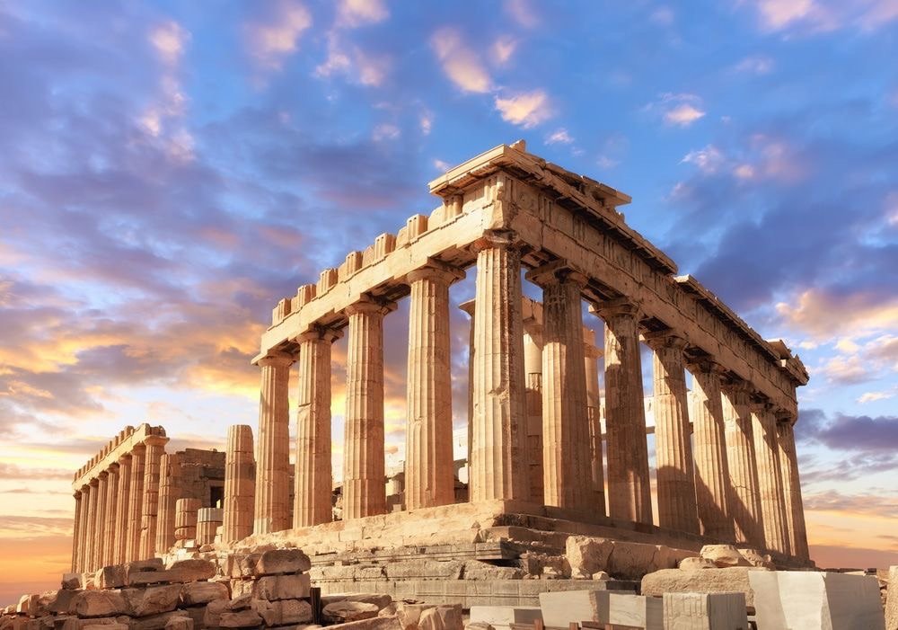

อารยธรรมกรีกโบราณ

ความเป็นมา
กรีกโบราณประกอบด้วยนครรัฐหลายแห่ง โดยนครรัฐเอเธนส์และสปาร์ตามีบทบาทสำคัญ ต่อประวัติศาสตร์กรีก
ผลงานที่สำคัญ
กรีกมีความโดดเด่นด้านปรัชญา ศิลปะ วรรณกรรม และการเมือง แนวคิดของนักปรัชญากรีกยังมีอิทธิพล ต่อการศึกษาของโลกในปัจจุบัน